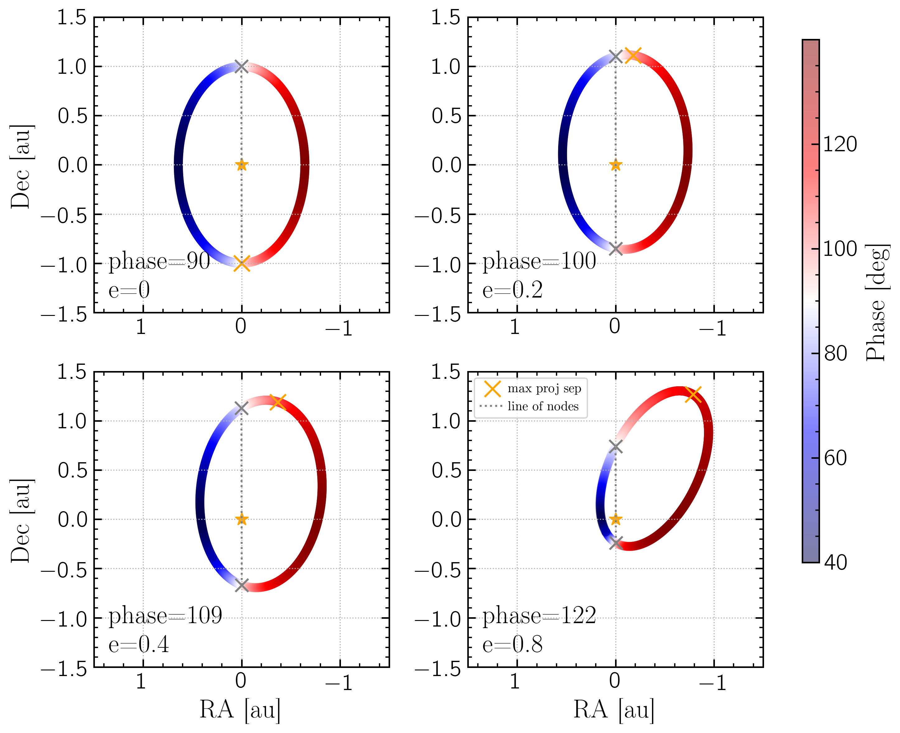
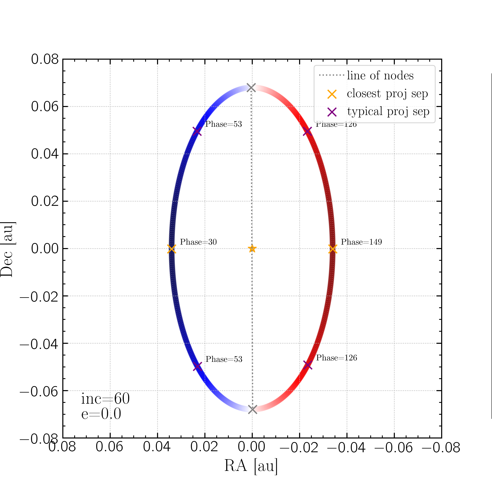

For the interactive plots of GMagAO-X and MagAO-X RV-detected planets that are targets for reflected light imaging campaign, we quantified the values at the maximum projected separation and the "most typical" values using the weighted average, weighted by contrast squared.
For a face-on circular orbit there is no maximum projected separation and the phase is 90$^\circ$ (quadrature) throughout the orbit. If the orbit is inclined, quadrature will occur at both the nodes, the point in the sky plane where the planet goes from behind the star to infront of the star and vice versa, and the nodes will be at the points of maximum projected separation.
However for eccentricity $>$ 0, the maximum projected separation will occur away from the nodes and thus at a different phase. This plot show a 1 Mjup planet around a 1 Msun star at 1 au with inclination = 50$^\circ$ and four different eccentricities: 0, 0.2, 0.4, 0.8. The phase at each point of the orbit is shown by the colormap, with quadrature being white, and the line of nodes marked by the grey x's and line. The location of max projected separation is marked by the orange x's and the phase at that location is annotated in the bottom corner. We see that as eccentricity increases the location of max separation occurs further and further from the nodes and quadrature.
This plot shows a 2d histogram of the eccentricity/phase relationship for all the planets in the MagAO-X target list (shown here). We see this relation clearly in that as eccentricity increases the phase at maximum separation occurs at an increasingly wider range of phases.
To find the "typical" separation we took the weighted least squares mean using contrast as weights.
$$<\rho> = \frac{\sum_i \rho_i * w_i^2}{\sum_i w_i^2 }$$
$$< C > = \frac{\sum_i C_i * w_i^2}{\sum_i w_i^2}$$
$$<\alpha> = \frac{\sum_i \alpha_i * w_i^2}{\sum_{i} w_i^2} $$ where:
$\rho_i$ is projected separation at each orbit point
$C_i$ is contrast at each orbit point
$\alpha_i$ is phase at each orbit point
$w_i$ is the weighting at each orbit point, which is $C_i$ here, where $C_i$ is acting as $\frac{1}{\sigma}$ in the WLS equation.
However we are interested in the typical separation and contrast we will see for the planet that is outside the inner working angle. So any orbit points with $\rho_i\; < $ IWA are excluded from the WLS.
This plot shows an example planet with a circular orbit and incl = 60 deg. The phase at each orbit point is shown by the color map; the line of nodes is marked by grey x's and dotted grey line. The closest projected separation if shown by the orange x's, and the location of the "typical" separation is shown by the purple x's.
This plot shows the same planet as above in separation on the left and contrast on the right. Blue lines give the full orbit, orange lines show only the parts of the orbit that are greater than the IWA, shaded grey, which went into the typical calculation. The orange and purple lines and x's are the same as above. The grey line marks the typical contrast, and the turquoise x's mark the typical phase computed from the above equations.
Phase at maximum projected separation
However for eccentricity $>$ 0, the maximum projected separation will occur away from the nodes and thus at a different phase. This plot show a 1 Mjup planet around a 1 Msun star at 1 au with inclination = 50$^\circ$ and four different eccentricities: 0, 0.2, 0.4, 0.8. The phase at each point of the orbit is shown by the colormap, with quadrature being white, and the line of nodes marked by the grey x's and line. The location of max projected separation is marked by the orange x's and the phase at that location is annotated in the bottom corner. We see that as eccentricity increases the location of max separation occurs further and further from the nodes and quadrature.

This plot shows a 2d histogram of the eccentricity/phase relationship for all the planets in the MagAO-X target list (shown here). We see this relation clearly in that as eccentricity increases the phase at maximum separation occurs at an increasingly wider range of phases.
Typical Separation
$$< C > = \frac{\sum_i C_i * w_i^2}{\sum_i w_i^2}$$
$$<\alpha> = \frac{\sum_i \alpha_i * w_i^2}{\sum_{i} w_i^2} $$ where:
$\rho_i$ is projected separation at each orbit point
$C_i$ is contrast at each orbit point
$\alpha_i$ is phase at each orbit point
$w_i$ is the weighting at each orbit point, which is $C_i$ here, where $C_i$ is acting as $\frac{1}{\sigma}$ in the WLS equation.
However we are interested in the typical separation and contrast we will see for the planet that is outside the inner working angle. So any orbit points with $\rho_i\; < $ IWA are excluded from the WLS.
This plot shows an example planet with a circular orbit and incl = 60 deg. The phase at each orbit point is shown by the color map; the line of nodes is marked by grey x's and dotted grey line. The closest projected separation if shown by the orange x's, and the location of the "typical" separation is shown by the purple x's.

This plot shows the same planet as above in separation on the left and contrast on the right. Blue lines give the full orbit, orange lines show only the parts of the orbit that are greater than the IWA, shaded grey, which went into the typical calculation. The orange and purple lines and x's are the same as above. The grey line marks the typical contrast, and the turquoise x's mark the typical phase computed from the above equations.